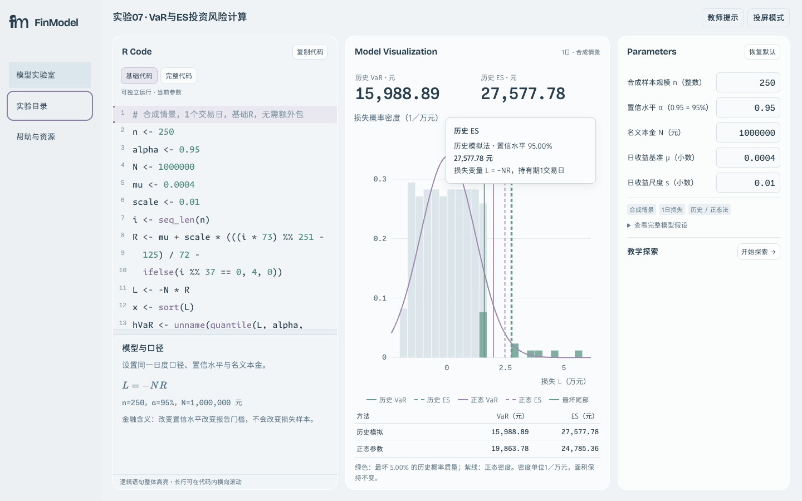
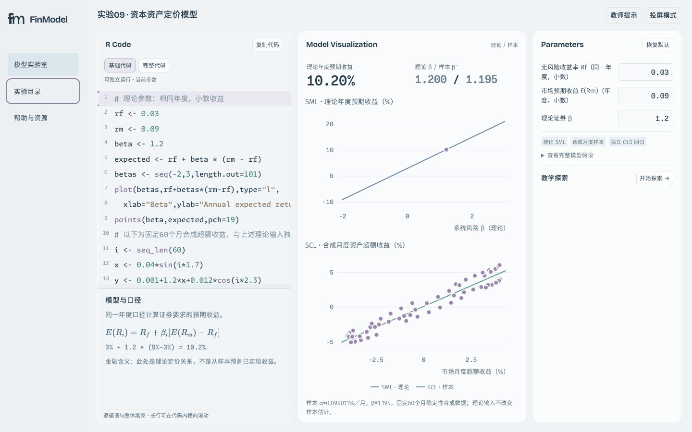
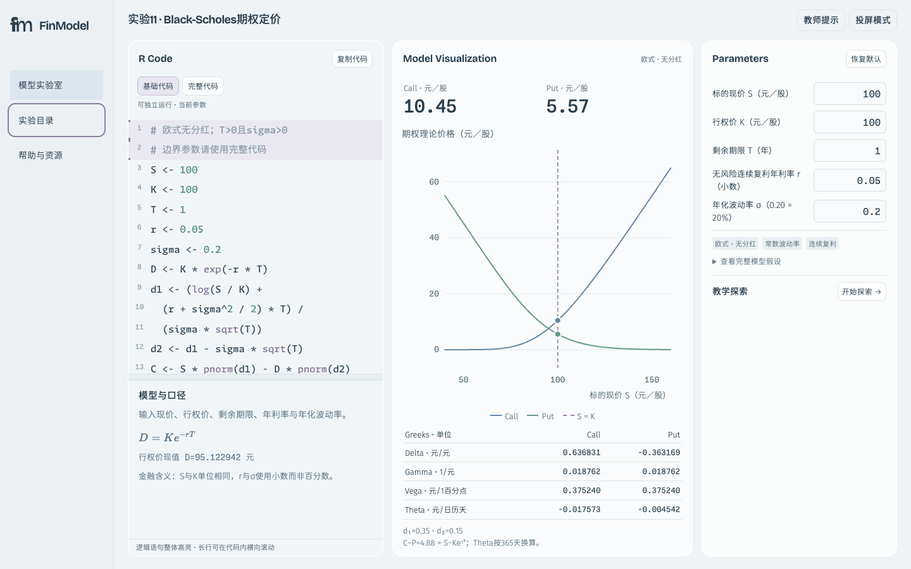

五个实验：目录、悬停与移开后逐页复核
Chrome 155.0.8059.84 · 构建 1.9.1-audit.829515775e3098be · 本轮301项断言通过，96个实际SVG目标逐个悬停与移开检查。另核对全部图例、10次快速扫过及刷新后目录。完整结果
06 GARCH：全部通过
07 VaR / ES：全部通过
目录：01→12，名称与当前项一致 鼠标停在图形上：临时提示出现
鼠标停在图形上：临时提示出现
鼠标移到无关区域180ms后：提示为0
08 均值-方差：全部通过
09 CAPM：全部通过
目录：01→12，名称与当前项一致 鼠标停在图形上：临时提示出现
鼠标停在图形上：临时提示出现 鼠标移到无关区域180ms后：提示为0
鼠标移到无关区域180ms后：提示为0
11 Black-Scholes：全部通过
目录：01→12，名称与当前项一致 鼠标停在图形上：临时提示出现
鼠标停在图形上：临时提示出现 鼠标移到无关区域180ms后：提示为0
鼠标移到无关区域180ms后：提示为0
首轮可见Chrome逐页检查亦通过。补查时捕获到系统指针重新进入图形的干扰；事件记录证明离开时已关闭、重新进入后再出现。为排除系统鼠标干扰，最终96目标矩阵在独立Chrome鼠标会话完成。没有因此修改产品代码。